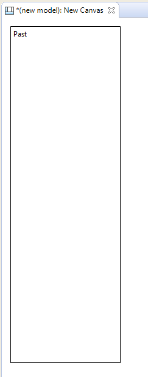
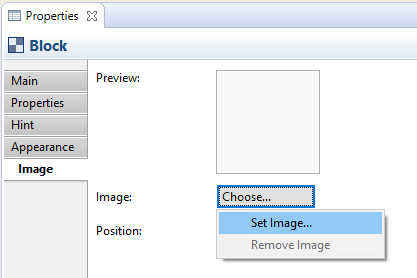

When the "My Images" Image Manager dialog window opens, select the "Open from File..." option and choose an appropriate image from your computer's file system. Do the same for the other Blocks.


The main components and concepts that constitute a Canvas are Blocks, Stickies, Images, Connections, Hints and Locking. A Canvas template typically consists of a number of (locked) Blocks and Images onto which the user can add Stickies, Images, Connections and additional Blocks if required. The following sections will describe each of these concepts in detail starting with a description of the Canvas Palette and an example of constructing an imaginary Canvas.
When working with a Canvas, the Palette presents you with the tools that you need to create these objects.

The Canvas Palette
Select a tool in the Palette and draw it onto the Canvas. The coloured squares represent "Stickies". Note that you are not restricted to the provided colours as you can change the colour of the Sticky in the Properties Window. Similarly with the provided Connections, you can change the line and arrow head style of a Connection in its Properties Window.
Let's work through the process of constructing our own Canvas based on mapping Past, Present and Future concepts.
Assuming that you have a model selected in the Model Tree follow these steps:
Adding Hints and Locking
For the finishing touches let's add some Hints to the Blocks and then lock them so that we can re-use the Canvas as a Template. Why do we want to add Hints to the Blocks? Well, as with the other objects in Archi models it's extremely helpful to provide a rubric that suggests to the end user the intent of the object and how it can be used in the model. Let's add the hints:


Now that we have created the Blocks, added an Image, provided the Hints and locked the objects we can save the whole thing as a Canvas Template and then create new instances of the Canvas from the template. See the sections "Saving a Canvas as a Template" and
"Creating a New Canvas from a Template" to do this.
Creating a new Canvas instance from the template means we can now start using it for real:

Our imaginary Canvas
For more ideas, look at how the built-in Canvas templates are constructed for further examples. See the section "Creating a New Canvas from a Template".
 Archi uses a different file format for "*.archimate" files when adding images.
Archi uses a different file format for "*.archimate" files when adding images.
Normally Archi saves "*.archimate" files as single plain text XML format files. However, when images are used the file format used is a binary archive file (zip format) that contains both the model's XML file and the image files. This is to keep all related files together.